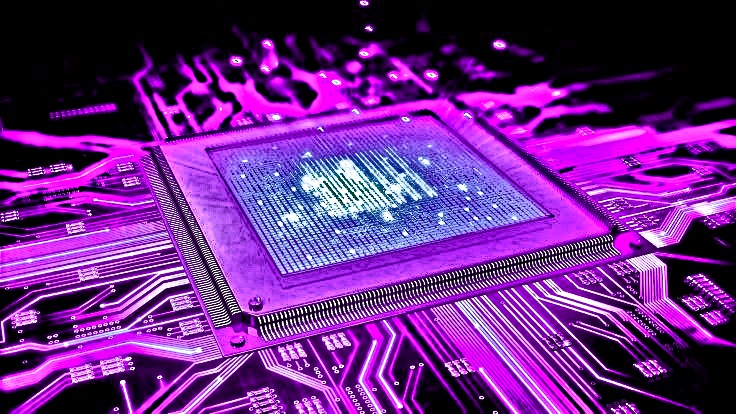

Reprogramación de Centralita
Aquí somos unos expertos en software, eso es así, por eso tenemos los tres mejores tipos de Reprogramación
de centralita que existe, somos los mejores en lo que hacemos, ponemos pasión en esto, confía en nosotros.
LA REPROGRAMACIÓN ALTERA LOS LÍMITES ESTABLECIDOS POR EL FABRICANTE, SE PERDERÁ LA GARANTÍA. PIENSA BIEN ANTES DE TOMAR ESTA DECISIÓN, NO HAY VUELTA ATRÁS
ECHA UN VISTAZO A NUESTROS PRODUCTOS

STARTER RP
Esta reprogramación es un paquete inicial y consiste en hacer a la centralita
un desbloqueo para eliminar los topes electrónicos del vehículo. En sí es una
mejora de prestaciones que viene limitada por la potencia con la que el motor
de tu coche traiga de casa.
229,99€
ADVANCED RP
Este pack es mejor en cuanto a calidad/precio, es el que más piden nuestros
clientes. Al igual que el anterior, incluye la eliminación de los topes electrónicos
del motor de tu vehículo, pero además, por 70€ más, nuestros mecánicos modifican la
presión del sistema del inducción, para una aspiración más agresiva.
299,99€
ADVANCED RP PRO++
Este es nuestro pack más agresivo, no hay duda de eso. Además de traer todo lo incluído
en el pack ADVANCED RP, ahora sí, además de eliminar los topes, modificamos el código de la
centralita para obtener hasta +75cv extra (según motor).
399,95€